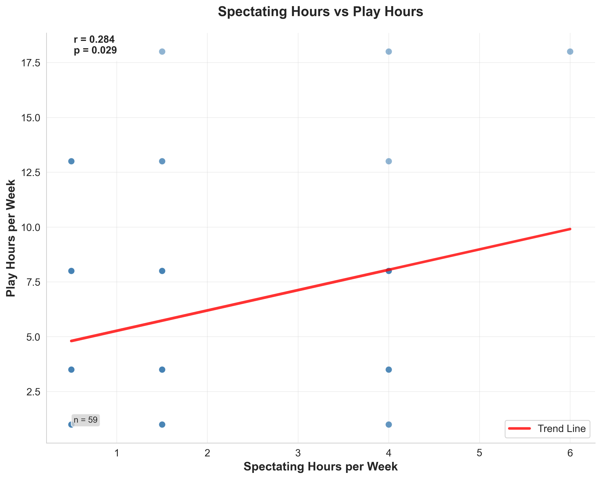
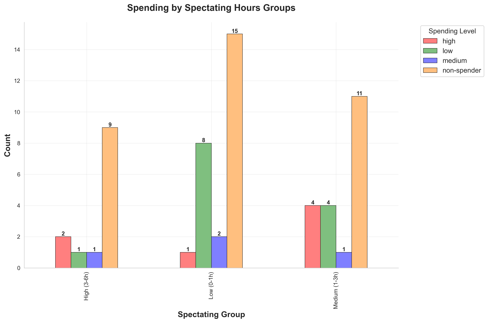
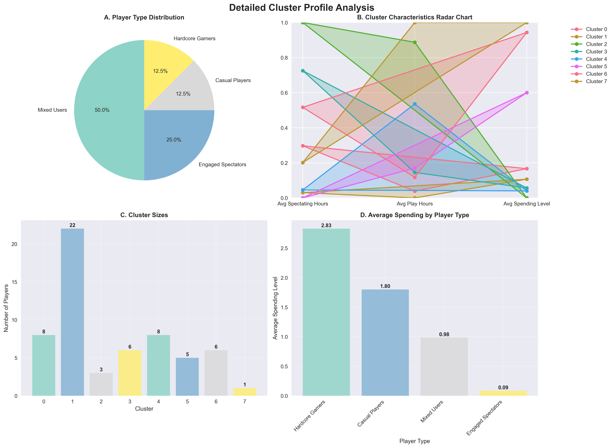

University of Leeds · Grade: Distinction
A full empirical research project investigating how watching Valorant esports influences player engagement and in-game spending behaviour. Primary survey data was collected from 72 active players and analysed using advanced statistical methods in Python.
Do esports viewers spend more money in-game than non-viewers? And if so, why? This question has direct implications for how gaming companies like Riot Games allocate their marketing budgets across content, influencers, and reward systems.
Spectating significantly increases weekly play hours
Engagement effect confirmed via regression analysis
No direct link between spectating and in-game spending
Contrary to prevailing industry assumption
Twitch drops and parasocial attachment show minimal influence on spending
Both factors statistically non-significant
3 distinct audience segments identified via K-means clustering
Mixed Users · Engaged Spectators · Hardcore Gamers

Spectating Hours vs Play Hours (n=59) — Pearson r = 0.284, p = 0.029. A statistically significant positive relationship: more spectating correlates with more weekly play time, confirming the engagement effect.
Casual players who both play and watch esports. Moderate engagement across both activities, low in-game spending.
High watch time, moderate play hours. Engagement-driven but not spend-driven — content consumes their time, not their wallet.
High play hours, low watch time. The highest in-game spenders — driven by play experience, not spectator content.

In-game Spending by Spectating Hours Group — shows no significant uplift in spending as spectating hours increase, directly supporting the finding that spectating does not drive monetisation.

K-means Cluster Profiles — visualising the three audience segments (Mixed Users, Engaged Spectators, Hardcore Gamers) across play hours, spectating hours, and in-game spending dimensions.
For Riot Games and esports marketers, this finding suggests that spectating content is valuable for retention and engagement — but should not be relied upon as a direct monetisation lever. Marketing spend on Twitch drops and influencer campaigns may be better reallocated toward in-game reward systems and personalised offers targeting high-spend segments.